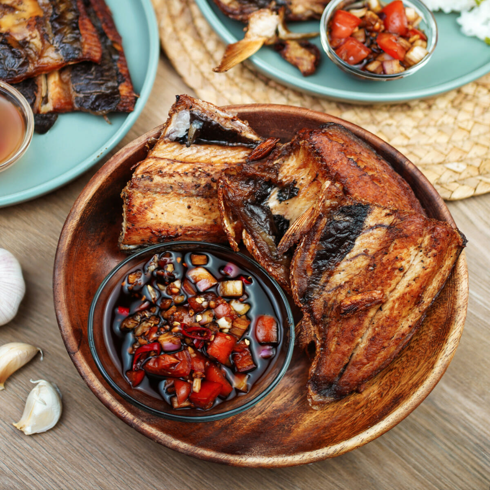
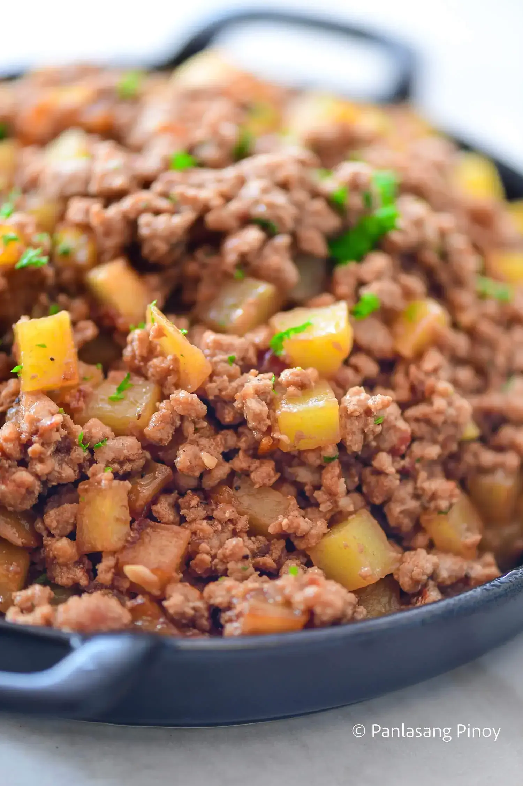

Chicken Curry stewed in coconut milk and curry spices is a hearty and tasty dish the whole family will love. Easy to make and cooks in one pan!
Ingredients
¼ cup canola oil
2 medium potatoes, peeled and quartered
2 large carrots, peeled and cubed
½ green bell pepper, cored, seeded and cut into cubes
½ red bell pepper, cored, seeded and cut into cubes
1 onion, peeled and cubed
3 cloves garlic, peeled and minced
1 thumb-size ginger, peeled and julienned
1 (3 pounds) bone-in chicken, cut into serving pieces1 tablespoon fish sauce
1 tablespoon fish sauce
1 cup coconut milk
1 cup water
2 tablespoons curry powder
salt and pepper to taste
Pork Adobo
Authentic Filipino Pork Adobo: A perfect blend of tangy vinegar, soy sauce, and aromatic spices, simmered to savory perfection. Taste the heart of Filipino cuisine!
Ingredients
2 lbs pork belly
2 tablespoons garlic
5 dried bay leaves
4 tablespoons vinegar
1/2 cup soy sauce
1/2 cup soy sauce
2 cups water
Salt to taste
Instructions
Combine the pork belly, soy sauce, and garlic then marinade for at least 1 hour
Heat the pot and put-in the marinated pork belly then cook for a few minutes
Pour remaining marinade including garlic
Add water, whole pepper corn, and dried bay leaves then bring to a boil. Simmer for 40 minutes to 1 hour
Put-in the vinegar and simmer for 12 to 15 minutes
Add salt to taste
Fried Chicken
Crispy on the outside, juicy on the inside—our fried chicken is a taste of comfort you can’t resist!
Ingredients
2 lbs. chicken
3/4 cup Panko bread crumbs
1/2 cup regular bread crumbs
1/4 cup cornstarch
1 teaspoon salt
1/4 teaspoon ground black pepper
1 teaspoon garlic powder
1 teaspoon onion powder
1/4 cup sherry cooking wine
1/2 cup soy sauce
2 eggs
2 cups cooking oil
Instructions
In a bowl, combine the salt, pepper, garlic powder, onion powder, sherry, and soy sauce. Mix well
Arrang the chicken in a resealable bag. Pour-in the soy sauce mixture. Let all the air out of the bag and seal. Marinate the chicken for at least 3 hours. Note: It is recommended to marinate overnight
Pour the cooking oil in a cooking pot. Apply heat.
Meanwhile, combine Panko with regular bread crumbs and cornstarh in a large bowl. Mix well.
Place the beaten eggs in a bowl. Dip the marinated chicken sliced in the beaten eggs, then roll over the bowl with breadcrumbs and cornstarch. Make sure that the chicken is fully coated.
While the oil is hot (300F), but not smoking hot, slowy put-in the coated chicken. Fry for 15 minutes per side in low to medium heat. Note: do not increase the heat as it will quickly burn the crumbs leaving the inside of the chicken raw.
Remove the party fried chicken from the cooking pot. Transfer to a plate lined with paper towels to absorb the oil.
Arrange in a serving plate. Serve with your gravy of ketchup.
Spaghetti
Twirl your fork into a plate of perfection—our spaghetti is simmered in rich, savory sauce and topped with love
Ingredients
2 lbs. Spaghetti noodles
1 lb. ground pork
1 lb. ground pork
4 pieces hotdogs or beef franks
35 ounces Filipino Style Spaghetti Sauce
1/2 cup shredded cheddar cheese
1 1/2 cups beef broth
1 medium onion
1 teaspoon minced garlic
Salt and pepper to taste
3 tablespoons cooking oil
Instructions
Cook the Spaghetti noodles according to package instructions. Once cooked, transfer to a bowl. Set aside
Heat the oil in a Pan
Saute the onion and garlic
Once the onions becomes soft, add the ground pork. Cook until the color turns light brown
Add the luncheon meat and hotdog. Stir and cook for 2 to 3 minutes
Pour-in the Spaghetti sauce and beef broth. Stir and let boil. Cover and simmer for 30 minutes
Try to taste the sauce and add salt and pepper if needed
Pour the Filipino Style Spaghetti sauce over the Spaghetti. Top with shredded cheese
Lumpia
Crispy, golden, and packed with flavor—our lumpia is the perfect bite-sized delight!
Ingredients
1 1/2 lbs ground pork
2 pieces onion2 pieces carrots
2 pieces carrots
1 1/2 teaspoons garlic powder
1/2 teaspoon ground black pepper
1/2 cup parsley
1 1/2 teaspoons salt
1 tablespoon sesame oil
2 eggs
Instructions
Combine all filling ingredients in a bowl. Mix well
Scoop around 1 to 1 1/2 tablespoons of filling and place over a piece of lumpia wrapper. Spread the filling and then fold both sides of the wrapper. Fold the bottom. Brush beaten egg mixture on the top end of the wrapper. Roll-up until completely wrapped. Perform the same step until all mixture are consumed
Heat oil in a cooking pot. Deep fry lumpia in medium heat until it floats
Remove from the pot. Let excess oil drip
Imbotido
Dive into the bold flavors of Bicol Express: a rich, spicy, and creamy Filipino favorite that warms the soul
Ingredients
2 lbs. pork belly
2 cups coconut milk
2 cups coconut cream
1/4 cup shrimp paste
5 cloves garlic
5 pieces Thai chili pepper
2 thumbs ginger
1 piece onion
2 pieces Serrano pepper
1 cup water
8 grams Maggi Magic Sarap
Instructions
Combine pork, ginger, garlic, onion, Thai chili pepper, long green pepper, and coconut milk in a pan. Mix well. Cover the pan and turn the heat to on. Let the mixture boil
Stir and adjust the heat to low. Cover and simmer for 50 minutes. Note: add water as necessary
Add the remaining coconut cream and bagoong alamang (as needed). Season with Maggi Magic Sarap
Transfer to a serving plate and serve with warm rice
Tortang Talong
Experience the perfect blend of smoky grilled eggplant and savory egg batter in every bite of Tortang Talong
Ingredients
4 pieces Chinese eggplant
2 pieces raw eggs
1 teaspoon salt
6 tablespoons cooking oil
Instructions
Grill the eggplant until the color of skin turns almost black
Let the eggplant cool for a while then peel off the skin. Set aside
Crack the eggs and place in a bowl
Add salt and beat
Place the eggplant on a flat surface and flatten using a fork
Dip the flattened eggplant in the beaten egg mixture
Heat the pan and pour the cooking oil
Fry the eggplant (that was dipped in the beaten mixture). Makes sure that both sides are cooked. Frying time will take you about 3 to 4 minutes per side on medium heat
Tinolang Manok
Experience the heartwarming flavors of Tinolang Manok—a comforting Filipino chicken soup that’s perfect for any day
Ingredients
2 lbs. chicken
1 cup malunggay leaves
1 cup hot pepper leaves
1 cup hot pepper leaves
1/8 teaspoon ground black pepper
1 piece unripe papaya
1 piece unripe papaya
6 cups water
1 piece Knorr chicken cube
1 piece onion
4 cloves garlic
3 thumbs ginger/li>
2 tablespoons fish sauce
3 tablespoons vegetable oil
Instructions
Heat oil in a pot
Sauté garlic, onion, and ginger. Add the ground black pepper
When the onion starts to get soft, add the chicken. Cook for 5 minutes or until it turns light brown
Pour the water. Let boil. Cover and then set the heat to low. Boil for 40 minutes
Scoop and discard the scums and oil on the soup
Add the Knorr chicken cube and chayote or papaya. Stir. Cover and cook for 5 minutes
Put the malunggay and hot pepper leaves in the pot and pour the fish sauce in. Continue to cook for 2 minutes
Transfer to a serving bowl. Serve
Fried Bangus

"Enjoy the perfect crunch and tender, flaky fish with our Fried Bangus—an irresistible Filipino favorite
Ingredients
1 large boneless bangus
1/2 cup white vinegar
4 cloves garlic
1/2 teaspoon whole peppercorn
1/2 teaspoon salt
1 cup cooking oil
Instructions
Combine vinegar, garlic, whole peppercorn, and salt in a bowl
In a deep wide plate, pour-in the mixture and then lay down the fish in a manner that the sliced part is facing down (skin should face up). Cover and place in the fridge. Marinate for 8 to 12 hours
Heat the cooking oil in a pan. Fry both sides of the bangus in medium heat until the color turns medium brown (note: it should take around 5 minutes per side). Note: the oil has a tendency to splatter because of the liquid from the marinade. Make sure to cover the pan while leaving open a small space for the steam to escape
Serve with spiced vinegar
Pork Giniling

Indulge in the classic taste of Pork Giniling—a Filipino favorite with savory ground pork and a delicious blend of veggies
Ingredients
1 1/2 lb ground pork
1 1/2 cups potatoes
1 cup carrots
8 ounces tomato sauce
6 cloves garlic
1 medium-sized onion
1 teaspoon granulated sugar
1 piece beef or pork cube
4 boiled eggs
Salt and pepper to taste
3 tablespoons cooking oil
1 cup water
Instructions
Heat a cooking pot and pour-in the cooking oil
When the oil is hot enough, put-in the garlic and sauté until the color turns light brown
Add the onions and sauté until the texture becomes soft
Put-in the ground pork and cook for 5 minutes
Add the beef or pork cube, tomato sauce, and water and let boil. Simmer for 20 minutes
Put the carrots and potatoes in then stir until every ingredient is properly distributed. Simmer for 10 to 12 minutes
Add salt, ground black pepper, and sugar then stir